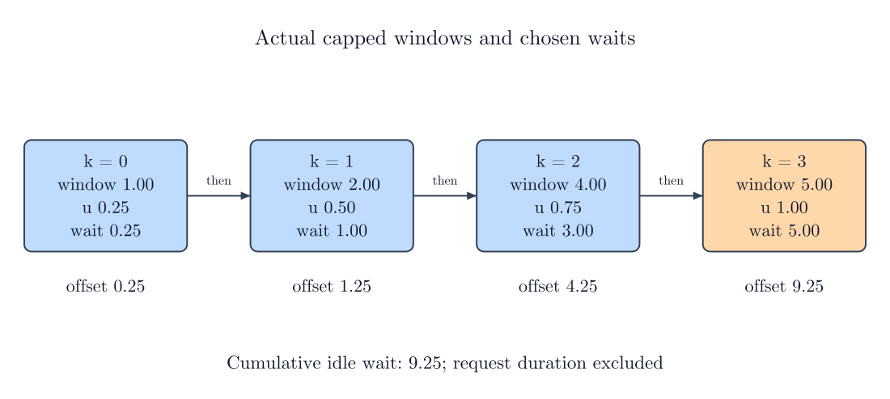
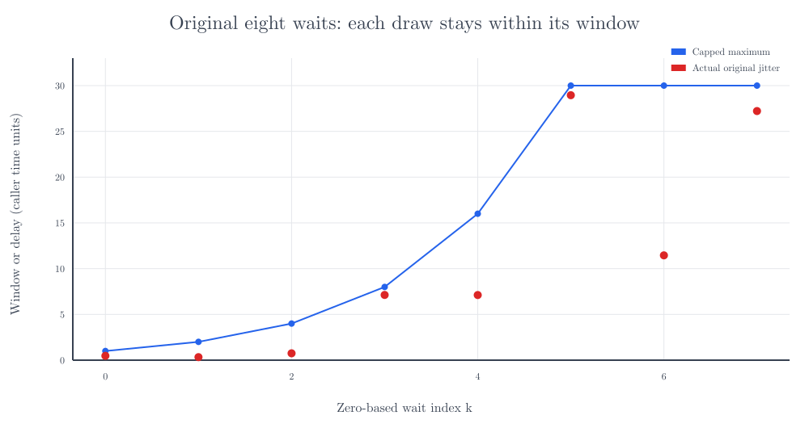
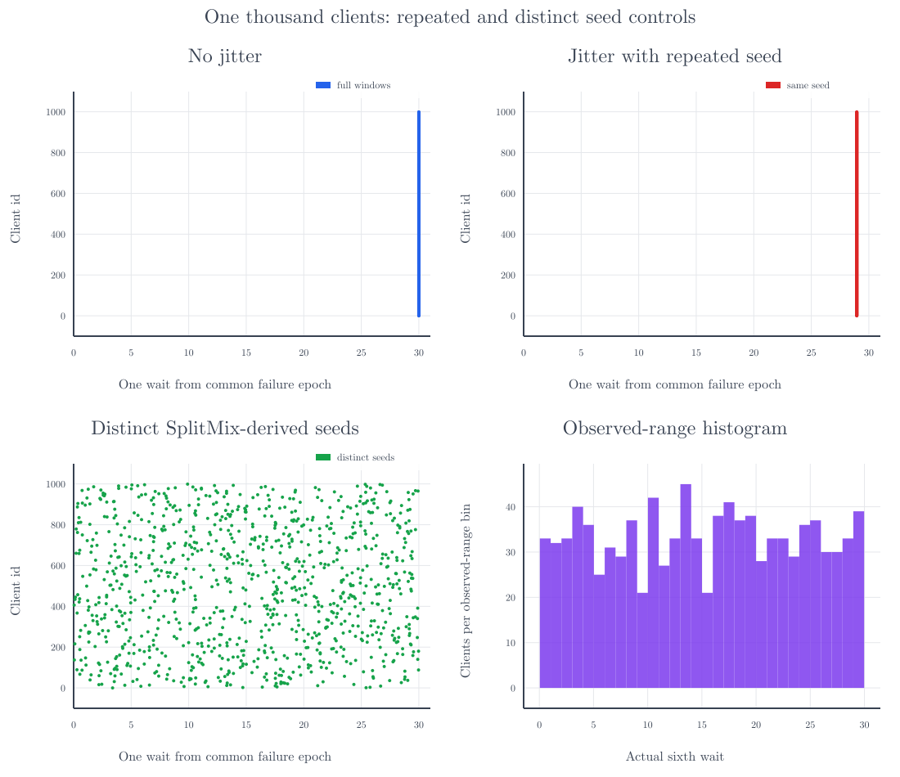
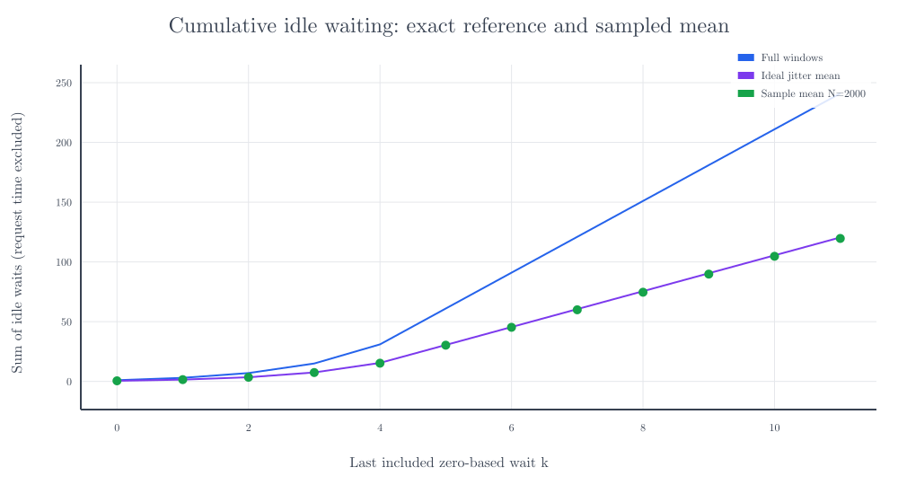
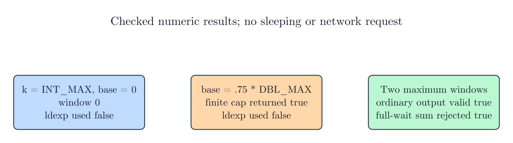

Exponential Backoff: Windows, Jitter and Cumulative Waiting
Abstract
Several clients can fail together and then repeat their requests together, creating bursts even when each client waits longer between retries. Capped exponential windows bound each wait, while jitter spreads chosen delays within those windows. We inspect a four-step example, preserve the original eight seeded delays, and compare repeated seeds with distinct seeded clients. Native C++ records expose actual windows, variates, delays and cumulative idle waits. The scalar calculation handles every nonnegative int index without a retry loop or intermediate floating overflow. These calculations neither send requests nor determine whether retrying an operation is appropriate.
Four windows, four waits, four different retry offsets
With base one and cap five, the first four windows are 1,2,4,5. Apply explicit unit variates 0.25,0.5,0.75,1 to obtain waits 0.25,1,3,5. Adding these gives cumulative idle offsets 0.25,1.25,4.25,9.25. A window is a maximum for one wait; an offset is the sum of waits so far. Request execution time is excluded.
The API numbers k from zero: k=0 is the wait before the first retry, following the original failed operation. It accepts finite nonnegative base/cap in one common caller-selected time unit. The explicit jitter function retains u=1 for compatibility, although a generated uniform variate comes from [0,1). Rounding at very small windows can still put a product on a window endpoint.
#include <dm/dm.hpp>
int main(){
std::filesystem::create_directories("build");const auto s=dm::algorithms::exponential_backoff_schedule(4,1,5,{.25,.5,.75,1});
std::print("| k | actual window | actual u | actual delay | cumulative idle wait | capped | scaled with ldexp |\n| ---: | ---: | ---: | ---: | ---: | :--- | :--- |\n");
dm::graphics::Diagram g(56,1100);dm::graphics::DiagramNodeStyle box;box.width=3.6;box.height=2.2;box.font_size=22;
for(std::size_t i=0;i<s.steps.size();++i){const auto& r=s.steps[i];std::print("| {} | {:.2f} | {:.2f} | {:.2f} | {:.2f} | {} | {} |\n",r.attempt,r.window,r.u,r.delay,s.retry_times[i],r.capped,r.scaled);
box.fill=r.capped?dm::graphics::RGB{254,215,170}:dm::graphics::RGB{191,219,254};g.node(std::to_string(i),{5.*i,0},std::format("k = {}\nwindow {:.2f}\nu {:.2f}\nwait {:.2f}",r.attempt,r.window,r.u,r.delay),box).text({5.*i,-2},std::format("offset {:.2f}",s.retry_times[i]),22);if(i)g.edge(std::to_string(i-1),std::to_string(i),"then");}
g.text({7.5,3.5},"Actual capped windows and chosen waits",26).text({7.5,-3.7},std::format("Cumulative idle wait: {:.2f}; request duration excluded",s.total_delay),23).save_svg("build/backoff_tiny.svg");
if(s.retry_times!=std::vector<double>{.25,1.25,4.25,9.25})throw std::runtime_error("tiny idle-offset identity failed");
}| k | actual window | actual u | actual delay | cumulative idle wait | capped | scaled with ldexp |
|---|---|---|---|---|---|---|
| 0 | 1.00 | 0.25 | 0.25 | 0.25 | false | false |
| 1 | 2.00 | 0.50 | 1.00 | 1.25 | false | true |
| 2 | 4.00 | 0.75 | 3.00 | 4.25 | false | true |
| 3 | 5.00 | 1.00 | 5.00 | 9.25 | true | false |

Derive the capped window and the jitter law
For base b>=0, cap c>=0 and k>=0, define
If b>=c, the cap applies immediately. If b=0, every window is zero. For 0<b<c, doubling reaches the cap at the first k with b·2k>=c. This exponential notation is mathematical; calculating 2k directly or forming an overflowing product is unnecessary.
The core decomposes b and c into base-two mantissas and exponents with frexp. Comparing k with their widened exponent gap, and the mantissas when those exponents align, decides whether the cap branch applies. Otherwise ldexp scales b by 2^k within the finite range below c. This uses a fixed number of scalar math operations even for INT_MAX. The emitted step records say whether the cap or actual ldexp branch ran; they do not count CPU instructions or promise a real-time deadline.
For an ideal independent U uniformly distributed on [0,1), full jitter D=UW has density 1/W over a positive window, so
The zero-window case is a point mass at zero. Finite pseudorandom variates and floating products are discrete approximations; the supplied u=1 endpoint is a deterministic control, not a draw from that ideal law. Native output always stays within the closed interval [0,W].
With independent ideal draws and B equal-width timer bins covering [0,W], two clients share a bin with probability 1/B. Among C clients, the expected number of colliding unordered pairs is C(C−1)/(2B). This remains positive: jitter spreads load, and timer quantisation can still produce collisions. No-jitter clients starting together share the same bin with probability one. These assumptions are not a claim of independence for arbitrary user seeds or of improved service latency.
Retain the original base-one, cap-thirty example
The original eight windows and jitter values are reproduced by a native seeded schedule. Its stream is xorshift64 with shifts 13,7,17, not the LCG named in the old comment. Each actual state transition supplies the high 53 bits times 2^-53. The default nonzero seed is the original 88172645463325252. The generator is deterministic and noncryptographic; reusing a seed repeats the entire schedule.
#include <dm/dm.hpp>
int main(){
std::filesystem::create_directories("build");const auto windows=dm::algorithms::exponential_backoff_sequence(8,1,30);const auto s=dm::algorithms::exponential_backoff_seeded(8,1,30);std::vector<double>x,delays;
std::print("| original k | capped window | actual unit variate | original jittered wait | cumulative idle wait |\n| ---: | ---: | ---: | ---: | ---: |\n");
for(std::size_t i=0;i<s.steps.size();++i){const auto& r=s.steps[i];if(r.window!=windows[i]||r.delay!=dm::algorithms::exponential_backoff_jittered(r.attempt,1,30,r.u))throw std::runtime_error("original scalar/schedule mismatch");std::print("| {} | {:.0f} | {:.9f} | {:.6f} | {:.6f} |\n",i,r.window,r.u,r.delay,s.retry_times[i]);x.push_back(i);delays.push_back(r.delay);}
std::print("\nOriginal windows {}; generated steps {}; jittered total idle wait {:.6f}.\n",windows,s.steps.size(),s.total_delay);
auto plot=dm::graphics::RPlot::create();plot.line(x,windows,"Capped maximum",{37,99,235},2).points(x,windows,"",{37,99,235},4).points(x,delays,"Actual original jitter",{220,38,38},5)
.title("Original eight waits: each draw stays within its window").x_label("Zero-based wait index k").y_label("Window or delay (caller time units)").y_limits(0,33).size(1000,530).save_svg("build/backoff_original.svg");
}| original k | capped window | actual unit variate | original jittered wait | cumulative idle wait |
|---|---|---|---|---|
| 0 | 1 | 0.474258987 | 0.474259 | 0.474259 |
| 1 | 2 | 0.164847573 | 0.329695 | 0.803954 |
| 2 | 4 | 0.187241583 | 0.748966 | 1.552920 |
| 3 | 8 | 0.890766023 | 7.126128 | 8.679049 |
| 4 | 16 | 0.444778983 | 7.116464 | 15.795512 |
| 5 | 30 | 0.965007496 | 28.950225 | 44.745737 |
| 6 | 30 | 0.381736505 | 11.452095 | 56.197832 |
| 7 | 30 | 0.907303832 | 27.219115 | 83.416947 |
Original windows [1, 2, 4, 8, 16, 30, 30, 30]; generated steps 8; jittered total idle wait 83.416947.

Distinct clients need suitable random streams
For one retry index k=5, use a common failure epoch and window W=30. One thousand deterministic full-window clients all choose delay thirty. One thousand clients given the same default seed all choose the same jittered delay. Distinct streams need a suitable seeding mechanism; simply saying "random" does not create independence.
Here the canonical SplitMix64 seeding engine supplies nonzero client seeds to the backoff generator. Each point is that client's actual sixth wait, measured relative to the same hypothetical failure instant. It is a one-window experiment, rather than a simulation of an entire service. The histogram uses the plotting API's equal bins over the observed sample range, not the theoretical fixed [0,30] bins in the probability calculation above. Mean and sample standard deviation are descriptive statistics of this reproducible finite fixture.
#include <dm/dm.hpp>
int main(){
std::filesystem::create_directories("build");dm::random::SplitMix64 seeds(2015);std::vector<double>client,full,same,distinct;
for(int i=0;i<1000;++i){client.push_back(i);full.push_back(dm::algorithms::exponential_backoff_delay(5,1,30));same.push_back(dm::algorithms::exponential_backoff_seeded(6,1,30).steps.back().delay);const auto seed=seeds.uniform_u64(1,std::numeric_limits<std::uint64_t>::max());distinct.push_back(dm::algorithms::exponential_backoff_seeded(6,1,30,seed).steps.back().delay);}
std::print("Clients {}; common window {:.0f}; full-window distinct waits {}; repeated-seed distinct waits {}.\n",client.size(),full[0],std::set<double>(full.begin(),full.end()).size(),std::set<double>(same.begin(),same.end()).size());
const dm::Vector<> values(distinct);std::print("Distinct seeded fixture: mean {:.6f}; sample SD {:.6f}; minimum {:.6f}; maximum {:.6f}; observed distinct waits {}.\n",dm::mean(values),dm::sd(values),*std::min_element(distinct.begin(),distinct.end()),*std::max_element(distinct.begin(),distinct.end()),std::set<double>(distinct.begin(),distinct.end()).size());
std::print("Ideal independent uniform reference: mean 15; SD {:.6f}; shared-bin probability for 30 fixed bins {:.6f}; expected colliding pairs {:.0f}.\n",30/std::sqrt(12.),1./30,1000.*999/(2*30));
auto a=dm::graphics::RPlot::create();a.points(full,client,"full windows",{37,99,235},2).title("No jitter").x_limits(0,31).x_label("One wait from common failure epoch").y_label("Client id");
auto b=dm::graphics::RPlot::create();b.points(same,client,"same seed",{220,38,38},2).title("Jitter with repeated seed").x_limits(0,31).x_label("One wait from common failure epoch").y_label("Client id");
auto c=dm::graphics::RPlot::create();c.points(distinct,client,"distinct seeds",{22,163,74},2).title("Distinct SplitMix-derived seeds").x_limits(0,31).x_label("One wait from common failure epoch").y_label("Client id");
auto d=dm::graphics::RPlot::hist(distinct,30,"",{124,58,237});d.title("Observed-range histogram").x_label("Actual sixth wait").y_label("Clients per observed-range bin");
dm::graphics::RLayout::create(2,2).add(a).add(b).add(c).add(d).size(1100,950).title("One thousand clients: repeated and distinct seed controls").fit_panels().save_svg("build/backoff_clients.svg");
}Clients 1000; common window 30; full-window distinct waits 1; repeated-seed distinct waits 1. Distinct seeded fixture: mean 15.124672; sample SD 8.632236; minimum 0.046119; maximum 29.973399; observed distinct waits 1000. Ideal independent uniform reference: mean 15; SD 8.660254; shared-bin probability for 30 fixed bins 0.033333; expected colliding pairs 16650.

Sum idle waits without confusing them with service completion
With no cap yet active, the deterministic offset after waits zero through k is b(2^(k+1)−1), the finite geometric sum. After a cap is reached, each further full-window wait adds c. For the original eight windows, these offsets are 1,3,7,15,31,61,91,121.
Under ideal independent full jitter, the expected cumulative idle wait is one half the sum of windows, and its variance is the sum of W_j²/12. That halves the expected idle budget relative to full windows in this specific calculation. It does not halve RPC latency, which would also depend on execution times, success rates, queueing and retry policy. A cap bounds each window; an infinite sequence of retries can still have unbounded total idle wait. No retry-count limit or aggregate rate limit is supplied by the scalar window itself.
The next controlled fixture draws two thousand distinct seeded schedules. The native half-window schedule gives the ideal mean curve exactly for these representable numbers. Empirical means and sample standard deviations are computed from actual cumulative offsets, not reconstructed codewords or a simulation of successful requests.
#include <dm/dm.hpp>
int main(){
std::filesystem::create_directories("build");const auto full=dm::algorithms::exponential_backoff_schedule(12,1,30),half=dm::algorithms::exponential_backoff_schedule(12,1,30,std::vector<double>(12,.5));dm::random::SplitMix64 seeds(20150304);
std::vector<std::vector<double>> offsets(12);for(int client=0;client<2000;++client){const auto s=dm::algorithms::exponential_backoff_seeded(12,1,30,seeds.uniform_u64(1,std::numeric_limits<std::uint64_t>::max()));for(std::size_t j=0;j<s.retry_times.size();++j)offsets[j].push_back(s.retry_times[j]);}
std::vector<double>x,means;double variance=0;std::print("| k | window | full-window offset | ideal jitter mean | ideal jitter SD | actual mean | actual sample SD |\n| ---: | ---: | ---: | ---: | ---: | ---: | ---: |\n");
for(std::size_t i=0;i<12;++i){const dm::Vector<> values(offsets[i]);variance+=full.steps[i].window*full.steps[i].window/12.;const auto mean=dm::mean(values);std::print("| {} | {:.0f} | {:.0f} | {:.2f} | {:.6f} | {:.6f} | {:.6f} |\n",i,full.steps[i].window,full.retry_times[i],half.retry_times[i],std::sqrt(variance),mean,dm::sd(values));x.push_back(i);means.push_back(mean);if(half.retry_times[i]!=.5*full.retry_times[i])throw std::runtime_error("half-window mean identity failed");}
auto p=dm::graphics::RPlot::create();p.line(x,full.retry_times,"Full windows",{37,99,235},2).line(x,half.retry_times,"Ideal jitter mean",{124,58,237},2).points(x,means,"Sample mean N=2000",{22,163,74},5)
.title("Cumulative idle waiting: exact reference and sampled mean").x_label("Last included zero-based wait k").y_label("Sum of idle waits (request time excluded)").size(1000,540).save_svg("build/backoff_offsets.svg");
}| k | window | full-window offset | ideal jitter mean | ideal jitter SD | actual mean | actual sample SD |
|---|---|---|---|---|---|---|
| 0 | 1 | 1 | 0.50 | 0.288675 | 0.500705 | 0.291888 |
| 1 | 2 | 3 | 1.50 | 0.645497 | 1.504719 | 0.646678 |
| 2 | 4 | 7 | 3.50 | 1.322876 | 3.465206 | 1.307478 |
| 3 | 8 | 15 | 7.50 | 2.661453 | 7.421643 | 2.633764 |
| 4 | 16 | 31 | 15.50 | 5.330729 | 15.242250 | 5.332151 |
| 5 | 30 | 61 | 30.50 | 10.169399 | 30.309993 | 10.428275 |
| 6 | 30 | 91 | 45.50 | 13.357270 | 45.272683 | 13.399326 |
| 7 | 30 | 121 | 60.50 | 15.919066 | 59.938870 | 15.773406 |
| 8 | 30 | 151 | 75.50 | 18.122270 | 74.624892 | 17.747037 |
| 9 | 30 | 181 | 90.50 | 20.085235 | 89.787954 | 19.814177 |
| 10 | 30 | 211 | 105.50 | 21.872738 | 104.701474 | 21.815987 |
| 11 | 30 | 241 | 120.50 | 23.524810 | 119.631277 | 23.487853 |

Finite limits, rejected inputs and the scope of the calculation
The original loop multiplied by two until the cap was met. For zero base and positive cap, it still iterated k times even though the answer was always zero. Near the largest double it could raise floating overflow in an intermediate product and then return a finite cap. The new comparison kernel avoids both behaviours. Its fixed-operation claim concerns the algorithm on fixed-width scalars, rather than a benchmark or clock deadline.
Negative indices/counts, nonfinite or negative base/cap, and nonfinite or out-of-range explicit u are rejected, including parameter checks for an empty sequence. A zero seed is refused because the xorshift state would remain zero. These replace malformed-input behaviours; the valid legacy outputs and the inclusive u=1 endpoint are retained.
A pure vector of finite windows can be valid even when their cumulative sum cannot fit. Native schedules reject a delay greater than the remaining finite capacity DBL_MAX−total before adding it. They return no partial schedule. They still use ordinary floating summation, so tiny increments can be rounded away. There is no artificial capture quota for this intrinsic O(N) output. Windows, steps and offsets are independently owned values.
This application full-jitter calculation is distinct from TCP's prescribed retransmission timer. RFC 6298 section 5.5 doubles its RTO after timeout and section 2.5 constrains any cap; this report implements neither that complete timer nor Ethernet's discrete collision-slot protocol.
#include <dm/dm.hpp>
int main(){
std::filesystem::create_directories("build");const auto max=std::numeric_limits<double>::max();const auto zero=dm::algorithms::exponential_backoff_step(std::numeric_limits<int>::max(),0,30),cap=dm::algorithms::exponential_backoff_step(1,.75*max,max),small=dm::algorithms::exponential_backoff_step(std::numeric_limits<int>::max(),std::numeric_limits<double>::denorm_min(),max);
std::print("Huge index/zero base: window {:.0f}; capped {}; scaled {}. Near-maximum doubling: finite {}; equals cap {}; scaled {}. Smallest positive base/huge index: equals cap {}; scaled {}.\n",zero.window,zero.capped,zero.scaled,std::isfinite(cap.window),cap.window==max,cap.scaled,small.window==max,small.scaled);
int invalid=0;try{(void)dm::algorithms::exponential_backoff_delay(-1,1,30);}catch(const std::invalid_argument&){++invalid;}
try{(void)dm::algorithms::exponential_backoff_sequence(-1,1,30);}catch(const std::invalid_argument&){++invalid;}
try{(void)dm::algorithms::exponential_backoff_sequence(0,std::numeric_limits<double>::quiet_NaN(),30);}catch(const std::invalid_argument&){++invalid;}
try{(void)dm::algorithms::exponential_backoff_jittered(1,1,30,2);}catch(const std::invalid_argument&){++invalid;}
try{(void)dm::algorithms::exponential_backoff_seeded(0,1,30,0);}catch(const std::invalid_argument&){++invalid;}
const auto windows=dm::algorithms::exponential_backoff_sequence(2,max,max);bool overflow=false;try{(void)dm::algorithms::exponential_backoff_schedule(2,max,max);}catch(const std::overflow_error&){overflow=true;}
const auto representable=dm::algorithms::exponential_backoff_schedule(2,max,max,{.5,.5});std::print("Invalid-parameter rejections {}/5; valid maximum windows {}; their full-wait sum rejected {}; half-wait sum equals maximum {}.\n",invalid,windows.size(),overflow,representable.total_delay==max);
std::print("Legacy jitter endpoint u=1: {:.0f}; valid empty windows {}; valid empty seeded steps {}.\n",dm::algorithms::exponential_backoff_jittered(3,1,30,1),dm::algorithms::exponential_backoff_sequence(0,1,30).size(),dm::algorithms::exponential_backoff_seeded(0,1,30).steps.size());
if(invalid!=5||!overflow||!cap.capped||small.scaled||zero.scaled)throw std::runtime_error("finite/domain control failed");
dm::graphics::Diagram g(60,1100);dm::graphics::DiagramNodeStyle box;box.width=4.8;box.height=2;box.font_size=22;box.fill={191,219,254};
g.node("zero",{0,0},std::format("k = INT_MAX, base = 0\nwindow {:.0f}\nldexp used {}",zero.window,zero.scaled),box);box.fill={254,215,170};
g.node("cap",{6.5,0},std::format("base = .75 * DBL_MAX\nfinite cap returned {}\nldexp used {}",cap.capped,cap.scaled),box);box.fill={187,247,208};
g.node("sum",{13,0},std::format("Two maximum windows\nordinary output valid {}\nfull-wait sum rejected {}",windows.size()==2,overflow),box)
.text({6.5,3},"Checked numeric results; no sleeping or network request",26).save_svg("build/backoff_limits.svg");
}Huge index/zero base: window 0; capped false; scaled false. Near-maximum doubling: finite true; equals cap true; scaled false. Smallest positive base/huge index: equals cap true; scaled false. Invalid-parameter rejections 5/5; valid maximum windows 2; their full-wait sum rejected true; half-wait sum equals maximum true. Legacy jitter endpoint u=1: 8; valid empty windows 0; valid empty seeded steps 0.

References
- Marc Brooker (2015), Exponential Backoff And Jitter, AWS Architecture Blog. [Original article](https://aws.amazon.com/blogs/architecture/exponential-backoff-and-jitter/). The capped-window/full-jitter construction is followed here. Its published contention-simulator outcomes are not measurements from this report.
- Paxson, Allman, Chu and Sargent (2011), Computing TCP's Retransmission Timer, [RFC 6298](https://www.rfc-editor.org/rfc/rfc6298.html), sections 2.5 and 5.5. Cited to distinguish protocol timer rules from this numeric application retry fixture.